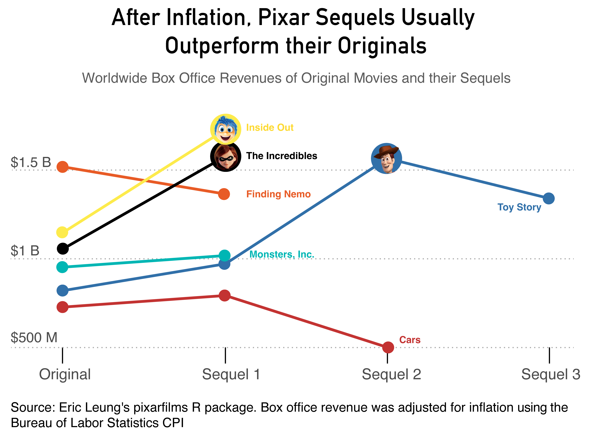

By Tanvi Palsamudram
On June 14th, 2024, Inside Out 2 premiered to audiences across the country. Earning over 1.6 billion US dollars at the global box office, this movie very quickly became the highest-grossing animated movie of all time. Lauded for “breaking the Pixar slump”, it has become increasingly clear that Inside Out 2 was a unique phenomenon.

However, not all reviews of this movie were complimentary. Referred to as “bland”, “unoriginal”, and "stakeless filler", it is clear that while Inside Out 2 was an unequivocal box office hit, it didn’t land in everybody’s hearts. But what exactly is this “Pixar Slump”? What was going on with Pixar before Inside Out 2 was released?
As an avid fan of animation and a guilty fan of online discourse about animation, I took it upon myself to investigate Pixar’s releases and reception over time. I came across Eric Leung’s open-source pixarfilms dataset that contains information about all things Pixar, including release dates, themes, box office revenue, and the critical and audience reception for every Pixar movie until the summer of 2024.

When looking at domestic and international box office revenue for each movie, it is clear that Pixar went through a box office lull for the past half-decade after years of fairly steady growth. Due to the Covid-19 pandemic preventing people from frequenting movie theaters and the introduction of Disney+ Streaming incentivizing viewers to wait for the films to be released, movies that came out in the early half of the 2020s (Luca, Soul, Elemental, Turning Red) suffered from low domestic and global box office revenues. However, Inside Out 2 was the first film to break the one billion dollar ceiling, effectively ending this slump.
But why was Inside Out 2 such a commercial success? Was it because it is a poignant depiction of the emotional rollercoaster of adolescence as we grapple with our widening worldviews and changing bodies? Or was it because it was a sequel to a previously successful movie? This question motivated me to investigate how box office rates of sequels differ from their original counterparts (taking inflation into account, of course).
It’s interesting to see that even after taking inflation into account, most Pixar sequels outperform their original, and those that don’t never get a next installment. The profitability of these sequels and the evolution of box office revenue made me wonder how the audience and critical response to these films has changed over time.

It appears that it really is downhill from here. Even though Pixar’s box office revenue has generally seen an increase over the past few years, its critical and audience reception has seen a steady decline with the exception of significant outliers (e.g., Cars 2).
Although still largely beloved, Pixar faces unique challenges of the rise of streaming, the aftershocks of a pandemic, and a general decrease in goodwill. Despite this slightly discouraging ending, I remain optimistic that Pixar will continue to be an animation staple for movie enthusiasts everywhere for years to come. Does Inside Out 2 represent a point of hope, or would it take several more years for Pixar to find a balance between its original reception and current revenue? I look forward to finding out.